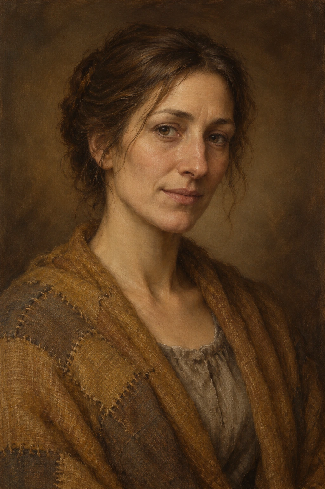

Harven Yolu · Üç Sessiz İşaret
Marhalden’in batı çıkışı → Harven’e inen orman patikası → Çatalocak mezrası · 90–120 dakika; iki kısa savaş, isteğe bağlı üçüncü çatışma
Son İlaç’tan sonra Sela’nın sevk yükü Harven’e gidiyor. Parti, yüklü arabayı geniş patikadaki korunaklı durakta sürücünün gözetiminde bırakıp iki katırı ve dört erzak torbasını Bera’nın fırınına ulaştıracak son yürüyüşe eşlik eder. Sena’nın durumu önceki karardan neyse öyle kalır.
3 oyuncu / 1. seviye. Bu bölüm Son İlaç’tan hemen sonra oynanabilir; köprü macerasının yerine seçilebilir veya köprüden sonra Harven’e yaklaşırken eklenebilir. Aynı köprü olayını zorunlu tekrar ettirme. İki kısa çatışma var; üçüncüsü yalnız hırsızları yakalayıp çatışmayı seçerlerse. Düşmanları topluca getirme. Her sahnede geri çekilme veya başka çözüm gerçek seçenektir. Bütün düşman canları mevcut grup için hafif masa taslağıdır.
1 · Üç yol, bir işaret
Taş yol ormanın içinde üçe ayrılıyor. Soldaki gövdeye yeni bir ok boyanmış. Ortadaki dar patikanın yanında üst üste üç yassı taş var; sağdaki yol ise suya doğru iniyor. Katırlardan biri sol yoldaki toprağı koklayıp duruyor.
Sela katırın ipini gevşetiyor. “Bera’nın taşıyıcısı üç taş demişti. Ama şu boya daha yeni.” Ağaçların arasında bir dal kırılıyor; ardından her şey yeniden sessizleşiyor.
Yalnız DM: Gerçek Harven patikası ORTA yol. Sol yol, Len ve Rusk adlı iki yetişkin soyguncunun kurduğu yem; sağ yol su kıyısına çıkar ve yirmi dakikada geri dönülebilir. Zar olmadan görülen bilgiler: üç taşta eski yosun var, soldaki boya hâlâ ıslak, sağdaki toprakta yalnız hayvan izi var. Oyuncular bunları birleştirirse doğru yol için ek zar isteme. Orta yol pusuyu arka tarafından görmeyi sağlar; pusu kendiliğinden silinmez, iki adamın saklandığı yeri fark ederek geçebilirler. Yeni bir Karlan geçidi veya tamamlanmış Kral Yolu değildir.
Görsel: road-forest-ambush

Hayatta Kalma DC 10 · Eski katır izleri ortadaki taş işaretine gider.
Başarısızlık: Yolu kesinleştiremezsin; boya ve yosun bilgisi yine görünür. Sela’nın tarifini kullanabilirsin.
Bulmaca: Taşıyıcının tarifi: “Yaşlı taşlara güven; taze işarete değil.” Hangi yol?
- Ortadaki üç taşın birbirine bakan yüzlerinde eski yosun bulunur.
- Soldaki boya parmağa bulaşır; işaret bugün yapılmıştır.
- Sağ yolda tekerlek veya yük katırı izi yok.
Çözüm: Orta patika. Doğru gerekçe veren oyuncuya tekrar zar attırma.
Sağdaki su yolundan dönmek veya izleri takip etmek de mümkün. Yanlış yol anında hasar vermez.
Sol patika 2. sahnedeki engelin önüne çıkar. Orta patika engelin yanını görür; soyguncular fark edilmeden bypass edilebilir.
Sela: “Yol kayboldu diye yükü de kaybetmek zorunda değiliz. Biraz bakalım.”
Sonraki adım: Orta yol seçildiyse 2. sahneye yandan, sol seçildiyse önden gir. Sağ yol yalnız zaman kaybettirir; sonra aynı kavşağa dön.
2 · Devrilen çam
Çam gövdesi yolu boydan boya kapatmış. Kesik yüzünden taze reçine akıyor. Köklerin arasında, ayak bileği yüksekliğinde bir ip seçiliyor.
Ağacın ötesinden bir adam çıkıyor. Elinde kısa bir sopa var; bakışı silahlarınızdan katırdaki erzak torbalarına kayıyor. “İki torba bırakın,” diyor. “Bu akşam başka dert aramıyoruz.” Daha gerideki ikinci adam, katırın bağını çözebileceği bir yer arıyor.
Yalnız DM: Len ve Rusk aç yol soyguncularıdır; şehir muhafızı değiller. Tuzak uyarısı herkes için görünür, sürpriz tur dayatma. İpi kesmek veya üzerinden kontrollü geçmek zar istemez. Orta patikadan gelen parti adamları önce görür; saklanıp geçebilir, seslenebilir veya onları yakalayabilir. İki torba verilirse gerçekten çekilirler. Kavga olursa Len tek saldırı yapar; Rusk ilk iki tur yalnız bir torbayı alıp kaçmaya çalışır. Rusk bir tur hem çalamaz hem saldıramaz. Len 3 cana inerse veya Rusk düşerse ikisi de kaçar/teslim olur. Peşlerinden savaşı uzatma.
Görsel: road-forest-ambush
İkna DC 11 · Bir günlük yiyecek ve küçük bir işle barışçıl anlaşırlar.
Başarısızlık: İki torbada ısrar ederler; kötü zar otomatik saldırı değildir.
Gizlenme DC 11 · Katırları yan patikadan geçirip çatışmadan kaçınırsınız.
Başarısızlık: Len sesinizi duyar ve konuşur; doğrudan hasar verilmez.
Len: “Kılıcını istemiyorum. Katırını da. Yiyecek bırak, yeter.”
Rusk, Len yaralanınca: “Bitti Len. Bu kadarına değmez.”
Sonraki adım: Yükten gerçekten kaybolan torbaları yaz. Düşmanlar etkisizse torbalar geri alınır. Eski taşıyıcı cebinde bir normal iyileştirme iksiri vardır (2d4+2); alınmışsa gruba tek adet ver. Sonra korunaklı dinlenme yerine geç.
3 · Köklerin altındaki açlık
Taşıyıcı kulübesinin çatısı yarı çökmüş ama arka duvarı rüzgârı kesiyor. Ocağın yanında kuru odun ve eski bir su kabı var. Patikanın kenarında açılmış bir erzak torbası duruyor; kumaşı bıçakla değil, iri dişlerle yırtılmış.
Yakın köklerin altından ağır bir soluk geliyor. Koyu kürklü, porsuk büyüklüğünde bir hayvan burnunu dışarı uzatıyor. Kısa alt dişleri çamura bulanmış. Size değil, yiyecek torbasına bakıyor.
Yalnız DM: Tek bir Kökdiş var. Aç bir leşçil; bölgeyi ele geçiren büyük boss değil. Önce torbayı çekiştirir, oyuncuya tepki fırsatı ver. Bir günlük yiyecek köklerden uzağa atılırsa onu alır ve gider; öldürmek şart değildir. Ateşli meşale ile mesafe korunması veya sakin geri çekilme mümkündür. Saldırıya uğrarsa 1 turda 1 kez 1d4 hasar yapar, zehir/grapple/çoklu saldırı yok. 3 cana indiğinde yiyeceği bırakıp kaçar. Kulübenin kapısından içeri giremez; geri çekilme gerçek çözümdür. Sonra bir saatlik kısa dinlenmeye izin ver, can zarlarını kullandır. İlk pusu çok zarar verdiyse yaratığı bu sahnede yalnız yiyecek kapıp kaçan bir tehlike olarak oynat.
Görsel: road-root-maw

Doğa DC 10 · Canlıdan çok yiyeceğe yönelen aç bir leşçil olduğunu anlarsın.
Başarısızlık: Adını bilemezsin ama torbaya baktığı açık; oyuncu davranışla çözebilir.
Hayvanlarla İletişim DC 11 · Yiyeceği bırakırken hayvanı güvenli mesafede tutarsın.
Başarısızlık: Yiyeceğe bir adım yaklaşır; saldırı otomatik değildir. İçeri çekilebilir veya torbayı bırakabilirsin.
Sela: “Torbayı alsın. İçeride biz varız, dışarıda yiyecek.”
Sonraki adım: Tehlike geçince güvenli bir kısa dinlenme yapabilirler. İksir ve can zarlarını hatırlat. Harven’e yürüyüşte aynı hayvan yeniden doğmaz. Gün batımında Çatalocak’a ulaş.
4 · Çatalocak’ın sıcak tası
Üç evin arasındaki çamurda odun izleri var. Sundurmanın altında bir kadın taslara çorba dolduruyor. “Harven yarın da yerinde durur,” diyor. “İçiniz ısınsın, sonra isterseniz gidersiniz.”
Adının Nara olduğunu söylüyor. Genç bir adam kuru odun taşırken yük bağlarınıza bakıyor. Bir evin eşiğindeki başka kadın, elindeki iğneyi bırakmadan, “Misafirin bohçasını izinsiz taşımayın,” diye sesleniyor. Odun taşıyan adam gülümsüyor; cevap vermiyor.
Yalnız DM: Nara Vesk ve yetişkin kardeşi Edis, yolcuların küçük eşyalarını çalan fırsatçılardır. Üç evin bütün halkı suçlu değildir. İğneyle çalışan Mera Siv dürüst bir köylüdür; uyarısı gerçek ipucu. Çorba normaldir, uyku ilacı veya zehir yok. Nara’nın şalı altında deri yolcu kemeri, Edis’in bileğinde orman pususundakiyle aynı kırmızı düğüm ipi vardır. Bu bir büyük örgüt değil; Len/Rusk ile ara sıra çalıntı mal değiş tokuş ederler. Düşen ip, yükleri taşımaya gereğinden fazla heves ve Mera’nın uyarısı zarsız görülebilir. Nara’ya güvenmek tek başına otomatik kayıp doğurmaz.
Görsel: road-yalin-hamlet

Sezgi DC 11 · Nara geceleme ücretinden çok nöbet tutup tutmayacağınızı öğrenmeye çalışıyor.
Başarısızlık: Samimiyetini okuyamazsın; yükleri kendi yanında tutabilir, Mera’ya sorabilirsin.
Araştırma DC 10 · Edis’in tuttuğu bağ yeni kesilmiş; sundurmada başka bir yolcunun adını taşıyan kese var.
Başarısızlık: Keseyi açmadan adını okuyamazsın. Mera konuşmayı ve örneği göstermeyi teklif eder.
Nara: “Çantaları ben kuru yere aldırırım. Siz dinlenin.”
Mera: “Kuru yer arıyorsanız benim kapının önü de kuru.”
Edis: “Bağını sıkıyordum sadece. Yük yolda açılmasın.”
Sonraki adım: Oyuncular nerede yatacaklarını, eşyalarını nerede tutacaklarını ve nöbeti söylesin. Burada kalmak zorunlu değil; ayrılırlarsa 6. adıma git, gizli ceza veya takip saldırısı ekleme.
5 · Kesenin düğümü
Ocaktaki son odun içeri çöküyor. Evlerden biri kararıyor. Sığınak tarafında yere bastırılmış bir tahta yavaşça esniyor; ardından kumaşın taşta sürtünmesine benzeyen bir ses geliyor.
Katır kulağını sese çeviriyor. Eşyalarınızın durduğu tarafta bir gölge duruyor. Gece henüz bitmedi.
Yalnız DM: Bu okuma yalnız hırsız gerçekten yaklaşıyorsa kullanılır. Eşyalar başında nöbet, bağlı çantaya çan, içeriden kilit veya Mera’nın evinde güvenli saklama planı varsa önce onu uygula; güveni cezalandırmak için sihirli hırsız üretme. Edis’in Gizlenmesi +3: nöbetçinin pasif Algısı veya etkin Algı kontrolüyle bir kez karşılaştır. Başarısızsa nöbetçi onu elini uzatmadan görür. Fark edilmezse en fazla 5 gümüş (varsa) ve iki günlük kumanya (varsa) alır; silah, zırh, karakter hikâye eşyası veya bütün envanter gitmez. Kayıp özel notta kaydedilir, uygulama oyuncu envanterini otomatik değiştirmez. Çalınanlar mezra dışındaki odun örtüsünün altında; ip iziyle sabah zarsız bulunabilir. Gece yakalanırsa Edis kaçmaya çalışır; Nara savunmaya gelir. İkisi yalnız kaçışları kesilip çatışma seçilirse savaşır. Edis ilk tur kaçış/soyulan torbayı bırakma işi yapar, saldırmaz; Nara turda tek 1d4 sopayla saldırır. Birinin canı 2’ye inerse teslim. Öldürmek veya uzun takip şart değil. Gece kısa olay, sekiz saatlik uzun dinlenmeyi otomatik iptal etmez; gerçek dinlenme kurallarını uygula.
Görsel: road-yalin-hamlet
Gözdağı veya İkna DC 11 · Çaldıklarını gösterir, odun örtüsünün yerini söylerler.
Başarısızlık: İnkâr ederler; kesik ip ve başka yolcunun kesesi gibi somut kanıtlar hâlâ vardır. Savaş zorunlu değil.
Edis yakalanınca: “Aldım. Bırakacağım. Katıra dokunmadım.”
Nara: “Mera’yı karıştırmayın. O bizi uyardı zaten.”
Mera: “Eşyalarını benim kapının önüne koyun. Sabah kimin ne aldığını konuşuruz.”
Sonraki adım: Çalınanları geri alma, serbest bırakma, Mera’ya devretme veya Harven’de şikâyet etme kararını yaz. Uzun dinlenmeyi bitirebilirler; sabah 6. adıma geç.
6 · Fırının dumanı
Sabah sisinin arasından ilk olarak bir baca görünüyor. Sonra taze ekmek kokusu geliyor. Harven’in ilk evlerine vardığınızda Sela torbaları sayıyor; birini omzuna alıp fırının önüne bırakıyor.
Kapıdaki kadın unlu ellerini önlüğüne siliyor. “Bera,” diyor. “Sizden önce yolun haberi geldi. Şimdi ne getirdiğinize bakalım.”
Yalnız DM: Bera önceki ana kampanyadaki aynı fırıncıdır. Bu bölüm ana Aç Çocuk görevine bağlanabilir. Gerçekten kaybolan veya geri alınan erzağı say; oyuncular iyi planla hepsini koruduysa başarıyı kabul et. Nara/Edis’in eylemleri bütün köyü kötü yapmaz. Mera gerçek yardımcı olarak kalır. Oyuncular şikâyet ederse isimleri, kanıtı ve olay yeri bilgisi verilir; muhafızın anında her sorunu çözmesini varsayma. Ödül olarak teslim edilen yük için sözleşmedeki normal ücret ve Bera’dan kişi başı iki günlük ekmek; çifte ücret yaratma. Yeni sihirli silah verilmez.
Görsel: road-yalin-hamlet
Bera: “Yük eksikse eksik deriz. Yolda kimi aç bırakmadığınızı da anlatırsınız.”
Sonraki adım: Bölüm bitti. Aç Çocuk görevini buradan aç veya Harven’de serbest oyun yap. Köprü bölümünü atladıysanız köprüde bir karar verilmiş gibi kayıt oluşturma.
Küçük savaş kartları
Len · yol kesici
Zırh 12 · Can 7 · İnisiyatif +1
+3 isabet; 1d4+1 ezici. Turda yalnız bir saldırı.
Yolu tutar; Rusk yükle uğraşırken tek etkin saldırgandır.
3 cana inince veya arkadaşı düşünce teslim/kaçış.
Rusk · torba sökücü
Zırh 11 · Can 4 · İnisiyatif +1
+2 isabet; 1d4 ezici; yalnız kaçışı kesilirse.
İlk iki tur torba ve kaçışla uğraşır; aynı tur çalıp saldıramaz.
Len teslim olursa o da bırakır.
Kökdiş
Zırh 12 · Can 9 · İnisiyatif +1
+3 isabet; 1d4 delici. Tek saldırı; zehir ve tutma yok.
Erzağı sürükler; takip mesafesi 6 metre. Kulübeye girmez.
3 cana inince veya yiyecek verilince uzaklaşır.
Nara Vesk

Zırh 11 · Can 6 · İnisiyatif +1
+2 isabet; 1d4 ezici. Turda bir sopa saldırısı.
Yalnız kaçış engellenip çatışma seçilirse; Edis ilk tur kaçışla uğraşır.
2 cana inince eşyaları verip teslim olur.
Edis Vesk
Zırh 11 · Can 4 · İnisiyatif +2
+2 isabet; 1d4 ezici; ilk tur saldırmaz.
Gizlenme +3; nöbeti bir kez karşılaştır. Yakalanırsa torbayı bırakıp kaçar.
Nara teslim olursa savaşmaz.